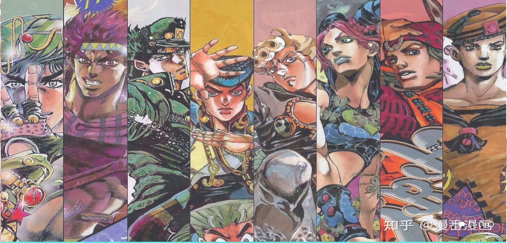

(组长兼组员)黄凯 0223351 软件工程2211班
名称：二次元(直入主题)。
网页的主体设计主题：介绍二次元及其分支。
整体风格偏向动漫风（因为主要也就是二次元嘛）。
其目的是 希望这个网站可以让大家可以更好的了解二次元,。
如果可以喜欢上二次元就更好了。
(但目前因个人能力和时间等因素，只能将介绍简单化，非常抱歉。)
本网站的主页设计参考了麦田音乐网。
(因个人能力有限，有些结构也离不开朋友们的帮助。)
本网页的大致内容可分为Animation（动画）、Game（游戏）。
Animation（动画）可分为《jojo的奇妙冒险》与《Fate系列》。
Game(游戏)目前只有《原神》
主要运用的技术：html，css，部分js/主要运用的工具:VSCODE，度娘。
运用js技术做成的画面轮播（目前还是不太熟练,并且借助了朋友的帮忙）

主要的内容：
jojo第三部————星尘斗士的主角团与BOSS的部分信息；
Fate系列中已经动漫化了的FGO和FSN的介绍；
游戏《原神》的部分介绍。
主要的步骤：
先建立好轮播和导航栏，
再确定方向与内容，
然后再确定好主要的结构，
最后再确认是否完成。
遇到的问题：
开始一直无法确定网站的方向和子页的主要结构；
在查找照片和信息方面用掉了很多时间；
在写代码的时候也有很多地方不懂和不熟练。
亮点与最困难的地方也就是js的画面轮播，即便是现在也仍然不是很懂。
自我评价：
目前在写代码方面仍然有许多问题，不足的地方还需要补起来。
总结：
革命还未成功，同志仍需努力。
展望：
希望自己在新的一年里可以在web方面更上一层楼！